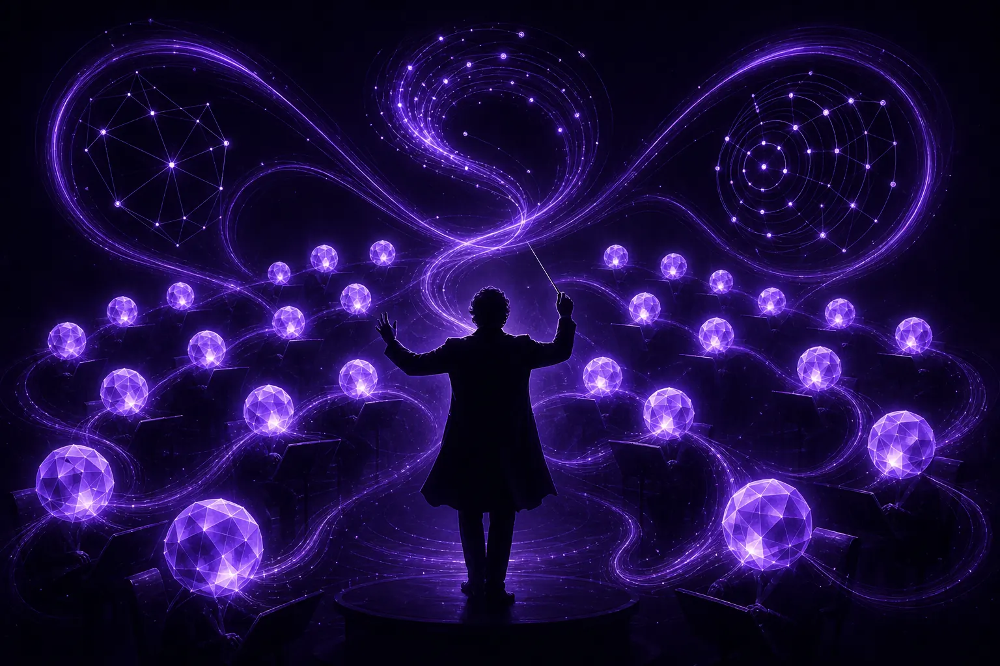

What is agentic marketing, and who conducts the agents?

Agentic marketing is marketing in which AI agents plan and carry out multi-step tasks, such as audience research, creative drafting and campaign optimisation, with limited prompting. Agents act, check results and try again. The part that matters most is the part agents should not own: a human strategist who decides goals, sets boundaries and is accountable for what goes out.
What makes a marketing tool "agentic"?
A chatbot answers a question. An agent pursues a goal. The practical difference is that an agent can break a task into steps, use tools along the way, look at what happened and adjust. Ask a chatbot for ten headlines and you get ten headlines. Give an agent the goal of finding a message that resonates with first-time parents in Singapore and it can read relevant conversations, cluster what people worry about, draft messages against those worries, and propose which to test first.
That loop of act, observe, adjust is what turns AI from a writing assistant into something closer to a junior team. It is also what makes agentic marketing risky when nobody is watching the loop.
Definitions worth agreeing on
- Agent: software that pursues a goal across several steps, using tools and feedback, without a human prompting each step.
- Loop: a repeating cycle of action and review, for example research, draft, test, learn.
- Conductor: the human who sets the goal, the boundaries and the final call. At AgentC, the C stands for this role.
- Checkpoint: a point in a loop where an agent must stop and wait for human approval.
Which marketing loops suit agents?
We run three loops at AgentC, and they map neatly onto the work most marketing teams find repetitive but important.
1. The research loop
Research agents read audience conversations continuously, not once a quarter. Ours run on SOMIN, an AI audience-research platform, using SOMIN's AI agents to decode the tones, emotions and tensions inside real social posts. The output is not a deck; it is a living list of tensions and moments, each linked to the posts that evidence it.
2. The creative loop
Creative agents take the strongest tensions and draft routes: headlines, hooks, scripts, visual directions. Volume is cheap for an agent, so the job shifts from producing options to choosing between them. That choice belongs to a person, and we explain why in our piece on taste and the human edit.
3. The optimisation loop
Optimisation agents watch live campaigns, spot creative fatigue, flag wasted spend and propose budget moves. Small, reversible changes inside an agreed budget can happen automatically. Anything that changes the message or the audience waits for a human.
Why does agentic marketing need a conductor?
Because agents are optimisers, and optimisers are literal. Tell an agent to maximise click-through and it will find the click-bait. Tell it to cut cost per acquisition and it may quietly abandon the audiences that take longer to convert but stay loyal. None of that is malicious. It is just what happens when efficiency is the only instruction.
The insight we build our agency around comes from listening to marketers talk about AI: ethical technology requires the courage to prioritise humanity over efficiency. In practice, that courage has a job title. Someone needs to own the questions agents cannot answer:
- Is this true to who the brand is, or merely effective this week?
- Would we be comfortable if the customer saw how this decision was made?
- Is this a moment where a person should speak to a person?
- Who is accountable if this goes wrong?
An orchestra can play every note correctly and still miss the music. The conductor's job is the music.
How is an agentic agency different from a traditional one?
A traditional agency spends most of its hours on production and reporting. An agentic agency spends most of its human hours on judgement. The agents absorb the scanning, drafting and monitoring; the strategists spend their time on interpretation, brand decisions and client conversations.
That shift changes what you should ask an agency. Not "how many people are on my account?" but "who decides, at which points, and how do I see the evidence?" We cover the governance side of that question in how to govern AI marketing agents.
What does a good first agentic project look like?
Start narrow. One audience, one channel, one clear business question. A worked example:
- Brief: a premium skincare brand wants to understand why repeat purchase is falling among customers in their thirties.
- Research loop: agents read conversations about skincare routines, price sensitivity and ingredient scepticism, then cluster recurring tensions.
- Human checkpoint: the strategist reviews the tensions against the evidence and picks two worth acting on, rejecting one that is real but off-brand.
- Creative loop: agents draft messages for each tension. The strategist edits and approves a shortlist.
- Optimisation loop: agents run and monitor tests, pausing weak variants within budget and reporting what they changed and why.
- Review: the strategist explains results to the client in plain language, including what the agents got wrong.
Agencies working on SOMIN have documented similar flows; the Havas Media case study is a useful read on how an established agency folds AI audience research into its process.
Where can I learn more about agentic marketing?
Beyond this blog, the community at Marketing Mondays regularly decodes how AI is reshaping marketing teams, and its in-person sessions in Singapore are a good place to compare notes with people running agents in production. If you are thinking about the reasoning models underneath agents, our sister studio GPT5 Marketing focuses on that layer.
What are the warning signs of agentic marketing done badly?
You can usually tell within a month. Output volume rises sharply while the number of decisions anyone can explain falls. Reports describe what the agents did but not why. Brand teams start finding copy they never approved. Nobody can name the person responsible for a given loop. Each of these is a symptom of the same cause: agents were deployed as a replacement for judgement rather than a support for it.
The remedy is not to switch the agents off. It is to put a conductor back on the podium, write down what each agent is for, and decide where it must stop and ask.
The short version: agents give you tempo. A conductor gives you music. You need both, and you need to know which is which. If you want to try a first loop, brief the agents at ask@agentc.marketing.
Frequently asked questions
Is agentic marketing the same as marketing automation?
No. Marketing automation follows fixed rules you write in advance. Agentic marketing uses AI agents that pursue goals across several steps and adapt based on results, which is more flexible and needs stronger human oversight.
Do AI agents replace marketing strategists?
Not at AgentC. Agents take over scanning, drafting and monitoring. Strategists keep goal-setting, brand judgement, approval of new creative and accountability to the client.
What technology do AgentC's agents use?
AgentC's agents run on SOMIN, an AI audience-research platform whose agents analyse real audience conversations and link every insight to the posts that support it.
Brief the agents
AgentC is an agentic marketing agency. Our agents research, create and optimise around the clock; our strategists decide what matters, what fits the brand and what should never be automated.
Email ask@agentc.marketing →